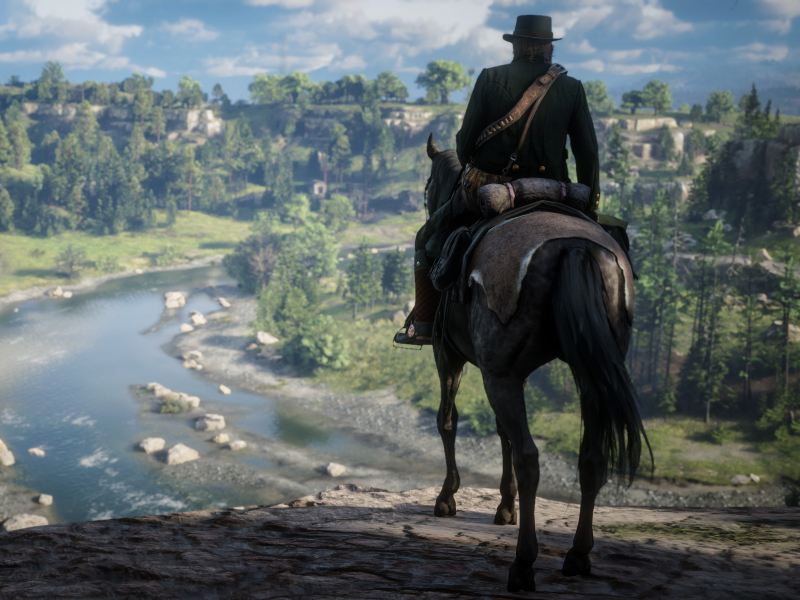

Red Dead Redemption 2 è un gioco d'avventura epico sviluppato da Rockstar Games. Ambientato nel selvaggio West, il gioco ti mette nei panni di Arthur Morgan, un fuorilegge che cerca di sopravvivere in un'epoca di cambiamenti. Esplora un vasto mondo aperto ricco di dettagli e sfide, dalla vita di banda alle rapine ai treni e alle cacce al tesoro. Con una grafica mozzafiato e una narrazione coinvolgente, Red Dead Redemption 2 offre un'esperienza di gioco unica nel suo genere. Clicca qui per maggiori informazioni.